I BUILT THIS TO BE MEAN.
LEVEL
SUR E
E
Run right. Touch the real door. I lie about the floor the whole way.
- 16 rooms in world 1, then boss stage 1
- 35 rooms in world 20
- Dash starts in world 3
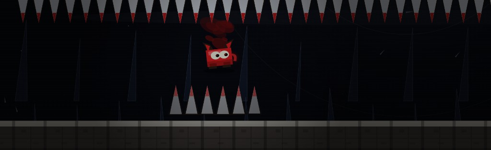
THE DEAL
Touch the door with the gold roof. That room is over. I spend the rest of the game pushing you at the other one.
- Door Gold roof, red door. That one is real.
- Fake Same shape, duller gold. In Knock Knock the joke is on the right. People run right, so I put it there.
- Rooms World 1 has 16 handmade rooms, then boss stage 1. World 20 has 35. Clear a world and the next one opens.
- Death You die, I talk trash, same room again. The skull number stays.
- Save This browser keeps your deaths, your time, and how far you got. Wipe the site data and I forget you.
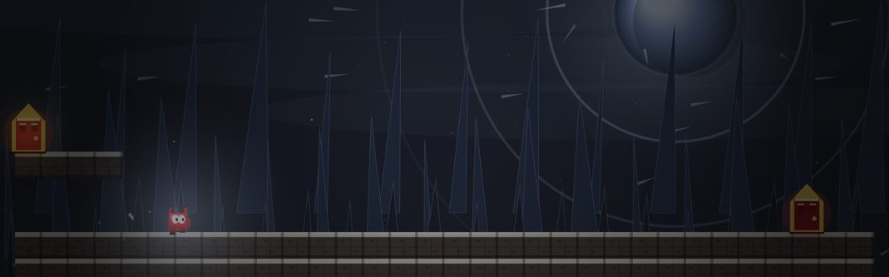
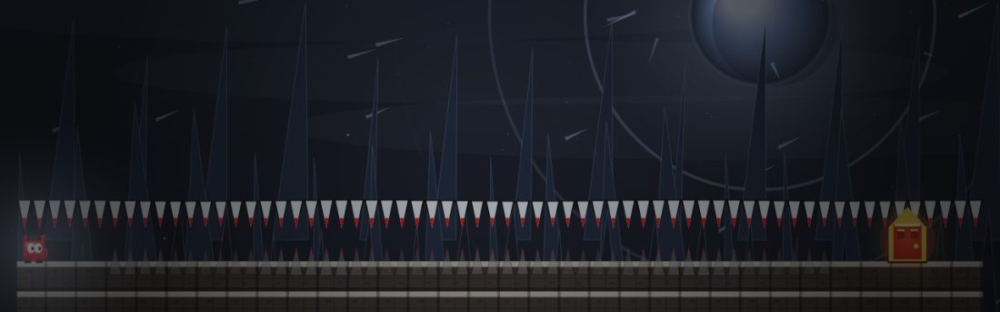
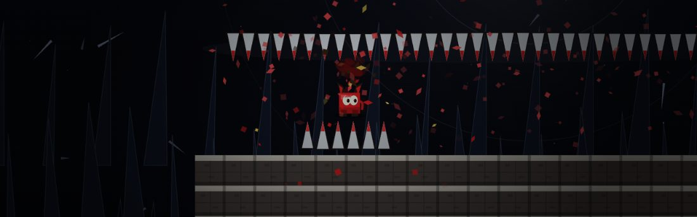
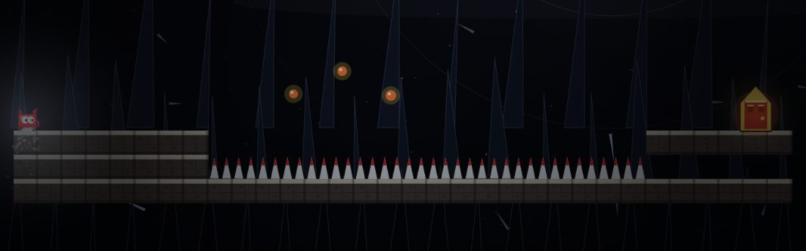
KEYS
Keyboard on a computer. Buttons on a phone. I should have given you dash in world 1. I waited until Frostbite, world 3, and people got stuck on ledges. That was stubborn.
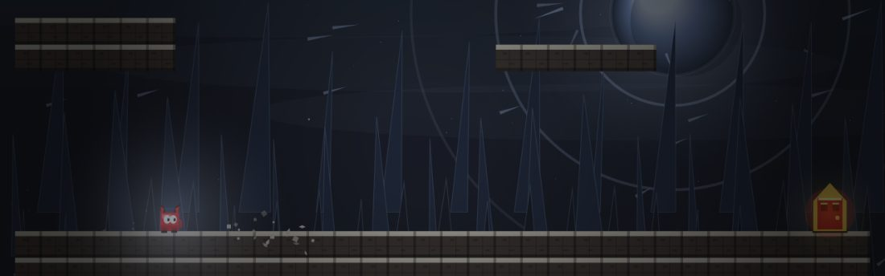
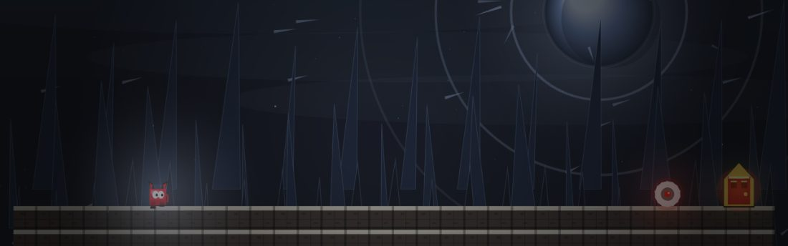
THE BAR
The top bar is the only narrator. It even lies about trap count until something real fires. I did that on purpose. Petty? Yes.
Stays question marks until a real trap fires. Dust and glow don't tick it. I wanted that little dread in your stomach.
Name, number, pips. Lit pip is where you are. Red pips are rooms you already got through. Wear them.
Survive traps inside 2.4 seconds and it stacks. Hit ten and it prints SURGE x79437924 like a maniac. Die and it's gone. I know. Mean.
Gold coins. In SHINY and LAST LAUGH they blow up. Everywhere else they're safe. I still go for them. I can't help it.
How long this world run has lasted, and how many times the room beat you. That second number hurts more.
Full clear: 79,437,924 × (90 − deaths) × (260 − seconds). Neither factor goes under 1. I save your best score next to your worst deaths. Romantic.
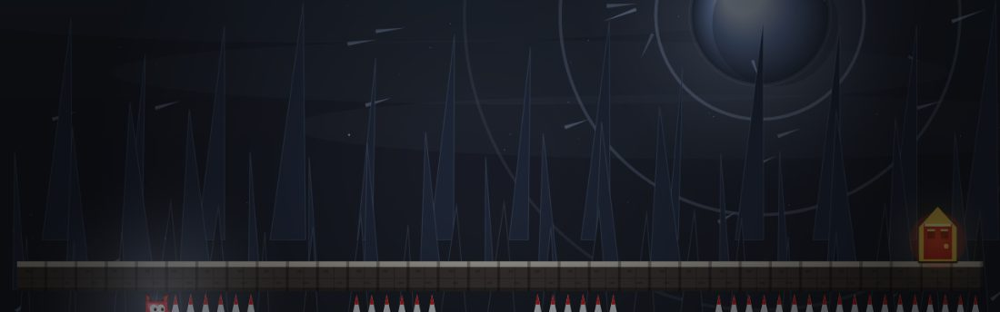
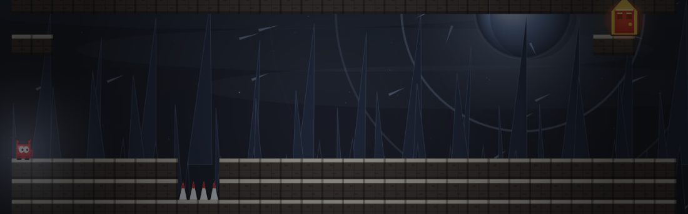
NULLSCAPE
Dimension 1 is handmade. I placed every trap. Sixteen rooms. Last Laugh is the sixteenth, and it is a room again. Boss stage 1 is the seventeenth. Flat floor. 20 traps. The door waits until you walk up, then it moves 10 times. Later worlds come from a seed. Same seed, same pain. These rooms I made angry.
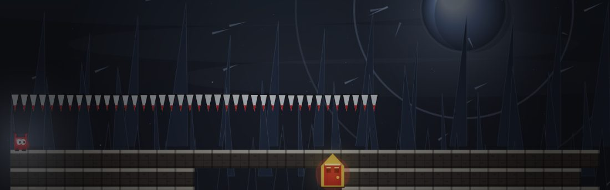
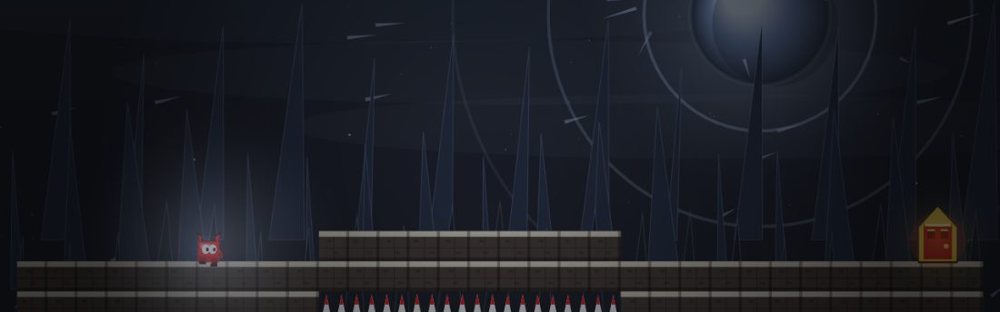
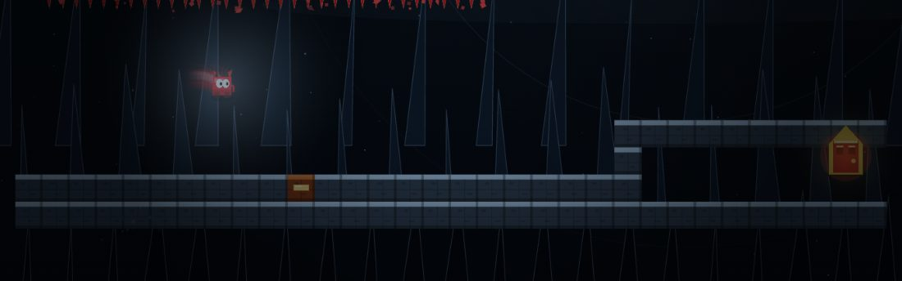
TWENTY WORLDS
I made the last room of every world a boss because I got tired of the stairs. The floor is flat. The door just sits there until you walk up, and if you stall for 30 seconds the boss gets bored and yeets it somewhere you aren't. Null throws the door 7 times. Ashwell starts at 9 and then it goes up by 2 every world. I had a spreadsheet. I lost the spreadsheet.
Null's fight is the long one. Everybody else fights like their world. They get their own moves, then a second set, then a last set that is actually different attacks. A mark shows up before the shot so you get a beat. If the shot gets you, that boss talks in their own color. Die to a normal trap and you still get the old line. Boss rooms have their own drums under the song. Last Light is slower and heavier and I get a little nervous about it.
When the moves run out the face goes tired, they fall, and they blow up. The blast kills you. You can still grab the door on the way down if you're stubborn.
Traps start at 10. Each world adds the old climb plus 10 more. The boss room doubles that, triples it from world 8, quadruples it from 18. Rooms get 5 blocks wider every world because the later traps were piled on the old map and it looked dumb. From world 4 about a quarter of the rooms are shafts. You climb or you drop. I kept the steps clean. Traps on stairs felt cheap, so they wait on the flat. Weird movement shows up in world 2, the horror guys in 5, the really cruel traps in 8, and from world 10 those stop being rare. Two signature traps per world. The list and the caps are under Traps if you want the numbers.
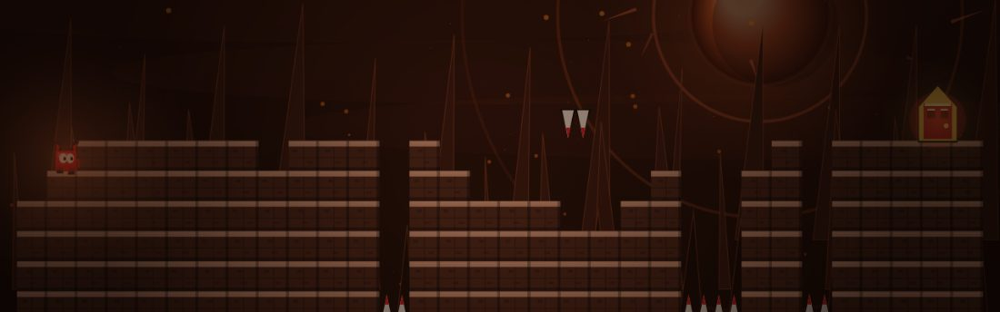
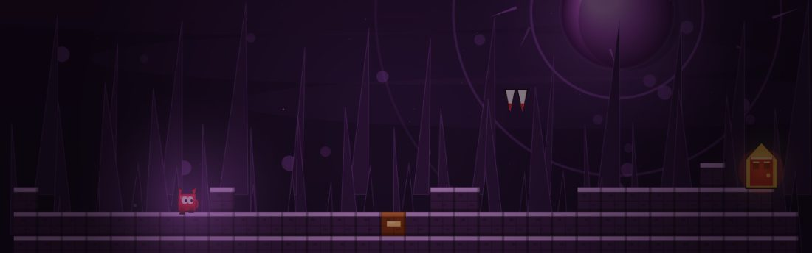
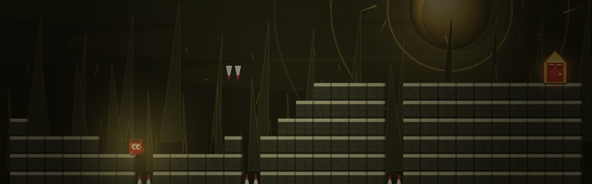
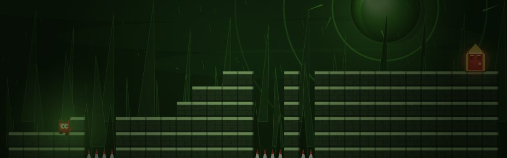
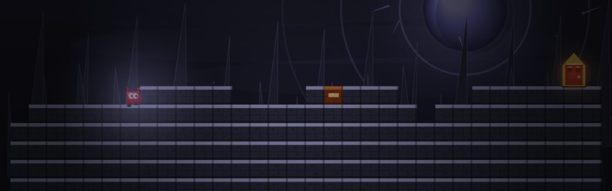
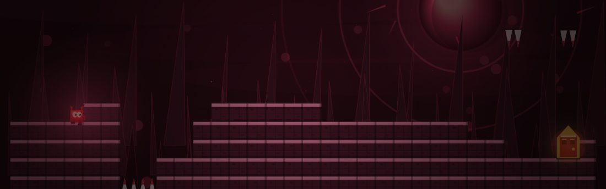
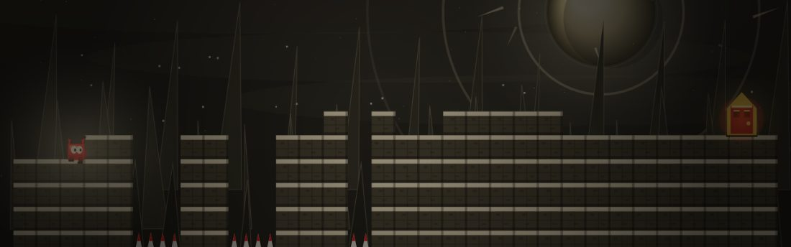
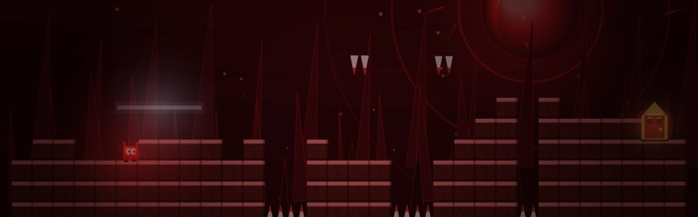
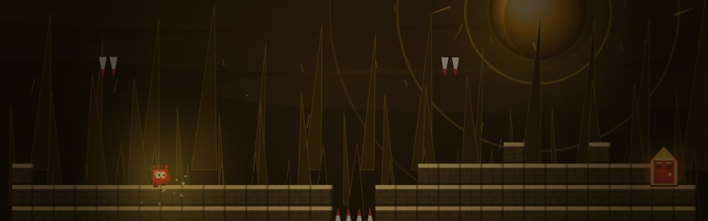
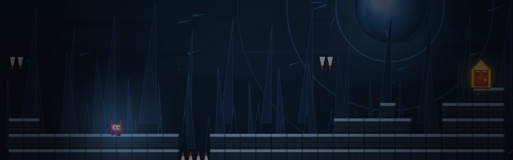
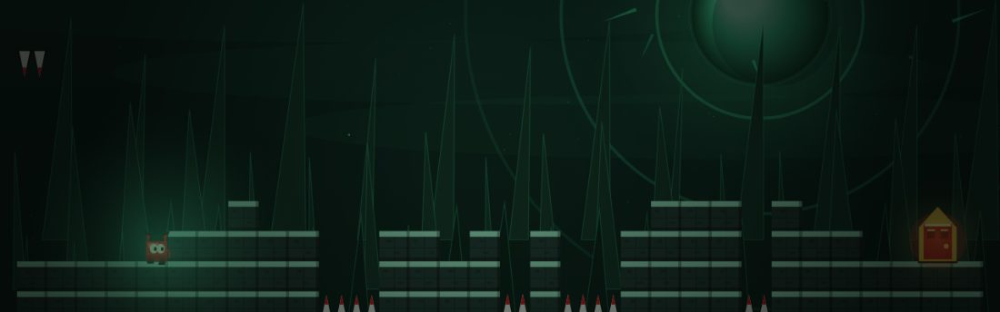
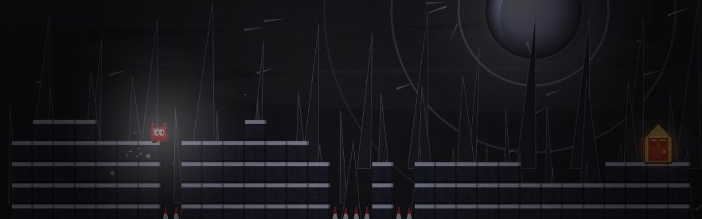
THE MARKS
A room is a pile of tiles plus a list of traps. These are the tiles. Dust and a fake beam never tick the SURGE counter. I put them there so you'd flinch at nothing. Works on me too.
#Solid floor or wall. The rare honest one. I don't use it as much as I should.
=Looks like brick. Stand on it and it crumbles. I put these where your feet want to rest. Sorry.
*Painted brick. You walk through it and feel dumb. That's the whole trick. Through is this, mostly.
iSolid, and you can't see it. Fall In hides the door behind a few. I know. Evil.
^The spike is one of the most basic traps every created. Truely a work of art. These ones point up out of the floor. Touch them and you're dead.
vSame spike, hanging from the ceiling. Worse angle. You jump into these and I get to say I told you.
BBounce pad. Yeet's has opinions, and then gravity gets soft. My stomach drops every single time.
!Teeth hiding in the floor. Tiny glint if you're lucky. Most people aren't. I'm most people.
oSaw. It sits, or it shows up late, or it decides it likes you. I gave it a personality. Mistake.
CA shard. In Shiny and Last Laugh they blow up. I still grab them. I'm weak.
EThe real exit. Gold roof. Touch it, leave, feel relief for about two seconds.
FA door that isn't the exit. Duller gold. Traps wait for you to touch it. I wait with them.
WHAT FIRES
A trap waits for something you do, then it answers. Sometimes late, so you think you're safe. You're not. Under this is the unlock stuff, the caps, and every trap name the generator can stamp. I kept the formulas because I forget them too.
SCALING
- Rooms15 + D World 1 is 16 handmade rooms plus boss stage 1. After that it's roomCount(d) = 15 + d. World 20 is 35. I counted.
- Width+5 / world stageWidth = 32 + 5×(D−1). The floors stretch so the later traps aren't glued to that old 32-wide map.
- ShaftsD4+ · ~1/4 About a quarter of the rooms. You go up or down eight or ten tiles. Saws and beams stay off the steps because that felt cheap.
- Trap budget10 + climb Starts at 10. Each world adds (2 or 3) + 10. Boss room is ×2, ×3 from world 8, ×4 from world 18. The live numbers are on the world cards up there.
- Activations+10 / world activationCap = 4 + 10×(D−1). How many times a trap that fires more than once can still bite you.
- RareD2+ One weird movement trick a room. D10+ up to 2. The cap is in worlds.js if you go looking. I do.
- EntityD5+ One horror thing. D10+ up to 2. Fog wants world 9. The hunt light wants world 10.
- ApexD8+ sparse, about 1 room in 8. D10+ common. tier = 1 + floor((D−10)/3), sometimes one less. Harder numbers from world 15. I kept turning the knob.
- QTED3+ about 1 room in 10. Presses go 1 to 6. The window shrinks about 0.045s a world and it won't go under 0.28s. Miss it and you die.
- Signatures2 / world Stamped first, so that world has a lie that's only its. The family still uses the normal placement rules. I'm not reinventing holes.
| D | Rooms | Width | Traps | Boss | Act | Rare | Ent | Apex | Signatures |
|---|
IT WAITS
- WalkYou pass a column (
if.x). This is most of them. I got lazy and it works. - JumpYou leave the ground near the start. Hope is a trigger. I know.
- GroundIce only bites while your feet are down. In the air you're fine, which feels wrong.
- StillDon't Stop. Hesitate for 0.4s and the floor drops. I timed it with a stopwatch like a maniac.
- DoorFake doors are in Psych and a few handmade rooms. Boss rooms have one real door. The boss flies around, grabs it when you walk up, and after 30 seconds drops it away from you. Null steals it 7 times. Ashwell starts at 9 and adds 2 a world. Later phases change the attacks. Then the boss falls and blows up.
- TimeWait For It holds the ceiling, then bricks you at 1.9s. Patience, demon.
- BeenPastThese arm after you clear a mark, then fire on the way back. Psych is the long version.
CORE ANSWERS
- gateSpikes in the floor, then the brick comes back. There's a wide 2-tile one for the middle of a run.
- holeFloor goes away. Spikes under it. The oldest trick I have and it still works.
- laserA real beam across the path. The glow decoys are just me being annoying.
- sawA blade from offscreen. Some of them chase. Handmade rooms and the signature ones do that.
- reverseLeft and right swap for a second. The cap opens at world 6. I still walk the wrong way.
- pushA shove toward the open side. Instant. Rude.
- dropA brick falls out of the ceiling onto your lane.
- lockYour hands freeze for a beat. You can watch it happen.
- windA shove that keeps going, then it clears when its turn is up.
- sideTeeth from the side,
>and<, pinching the lane. - ceilingSpikes come down, then the air comes back. If you were tall about it, you weren't.
- gravityGravity flips. Cap opens at world 5. Up Is Down is the handmade version and I almost trapped myself in it.
- teleportYou get snapped backward. Cap opens at world 10. Feels like the game stole a step.
RARE · MOVEMENT
World 2 and up. Up to 2 a room from world 10. I space them off the other real hits so you can actually see what killed you. Blackout is world 3 and later, about 1 room in 10.
- slipIce. You slide while your feet are down.
- jumpCutHeavy legs. The jump gets short. You will notice.
- magnetA pull that drags you back along the floor.
- blinkThe floor vanishes for a beat. Gone. Then it's back, usually.
- clampJaws. Ceiling teeth and floor teeth close on you.
- echoA late copy of whatever you just did. It shows up after you feel clever.
- stickyTar. Glue on the flat floor. Walking gets stupid.
- riftA gap opens. World 6 and up. The floor just decides.
- blackoutNear-total dark for about 11.15 to 11.35 seconds. You can still die in it. I checked.
- heavyCrush. Gravity gets heavier for about a second. Jumps get sad.
ENTITY · HORROR
World 5 and up. Up to 2 a room from world 10. The numbers get tighter from world 14. I didn't want these guys in the first rooms. World 1 is already a lot.
- stalkerIt sees you. Then it chases, behind you or beside you.
- droneA little hover thing that locks on and fires. Robots are rude.
- rocketA missile, sideways. You can tell by the explosion.
- voidFogDeath fog that rises. World 9 and up. Standing in it is the mistake.
- watcherAn eye on the ceiling. It tracks you. Freezing is a choice.
- sentryA turret on the side. It pulses. The wall has a gun now.
- swarmA pack of small chasers. Too many teeth. I got carried away.
- phantomA fake you. It wears your face and has better timing.
- huntLightA moving circle of safe light. World 10 and up. Leave it and the dark is hungry.
- crushBotA stomper coming down. The robot says sit.
APEX · CRUEL
Rare in world 8, common from world 10, nastier from world 15. These count against the trap budget. Dust and fake beams stay off that count. Those are just me whispering.
- reaperA fast silhouette chasing from behind. You hear it late.
- salvoThree rockets, staggered. One dodge is not the whole story.
- pincerTwo saws closing the lane. Pick a gap and mean it.
- guillotineCeiling teeth slam a wide row. Don't be tall about it.
- abyssA wide chunk of floor deletes, spikes underneath. Bigger hole. Same joke.
- eclipseBlackout plus the hunt light. You can barely see the circle you're supposed to stay in.
- snareA short lock, then teeth in the floor. Your hands come back to a bad view.
- orbitSawA saw bobbing up and down. Jump the low part. Or don't.
- crossfireTwo turrets, opposite sides. The lane is the argument.
- leechA hard magnet pull, plus teeth. It drags you into the pointy bit.
- shardRainSpike columns falling. Look up, which is also how the ceiling gets you.
- wraithA chase thing that phases. It isn't always where you think.
- mineLineFloor teeth ahead of you, on a delay. You walk into your own future.
- gravLockGravity flips and your hands lock. Both at once. I was in a mood.
- seekerSomething homing on your X. Sidestep or it finds the column you're in.
- collapseFloor sandwich. The lane crushes. Between the spikes, but the spikes come to you.
- barbedWindWind, plus a spray of hazards. You get pushed into the messy part.
- mirrorBoltA laser bolt from the side you weren't watching.
- pitBeastSomething rising out of a gap. The hole had a resident.
- judgmentA wide delayed hit across the lane. You see it. You still have to move.
QTE
World 3 and up, about 1 room in 10. The key pool grows with the world. Miss it and you die. Window = max(0.28, 1.15 − 0.045×(D−1)). Presses: world 3 is 1, 4 is 2, 8 is 3, 12 is 4, 16 is 5, 19 is 6. My hands hate 19.
SIGNATURES · 2 PER WORLD
Placed first, every room. The lie text is forced to that signature's name so you can tell which world bit you. If the bar says VOID PULL, you're in Nullscape. Or you were.
SOUND
This page plays the old shared mix. Every dimension has its own unique soundtrack for each dimension now, making the game more creative, and this page kept the one from before I did that. Tap once and it starts.
- Classic 96 bars Shared drums, pads, and lead. Roots and tempos still follow the world cycling behind you. The in-game worlds now sound nothing like this on purpose.
- Root Hz The chord follows the world's root note. Nullscape sits at 92.5. I got weird about this.
- Mute 🔊 Speaker in the top bar. Same place energy as the in-game mute, without the trap heat.